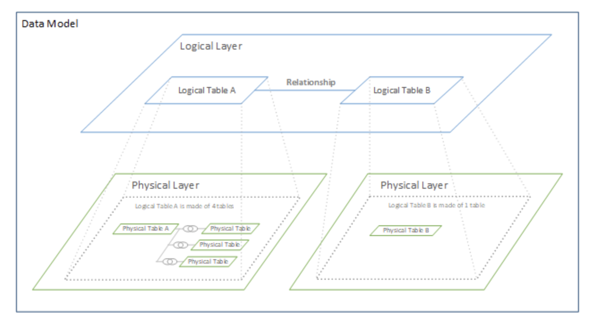
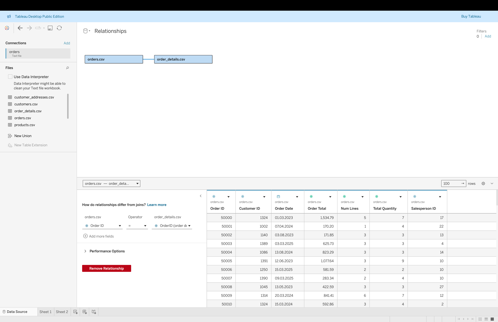
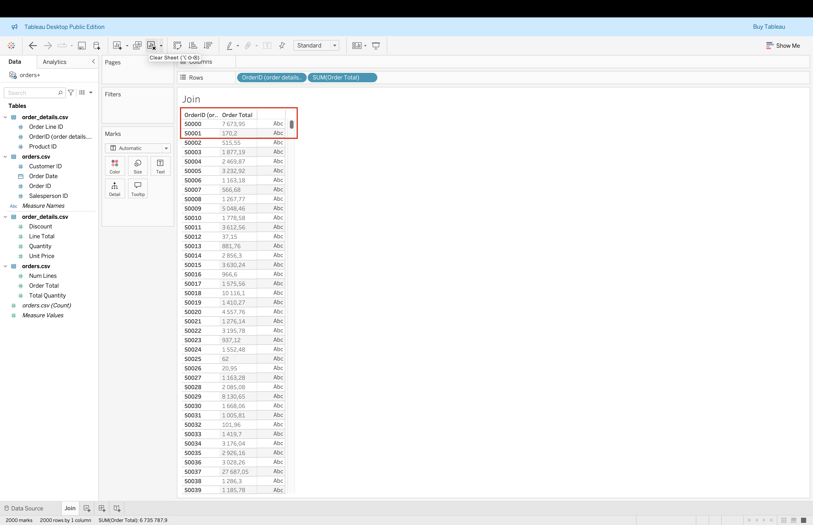
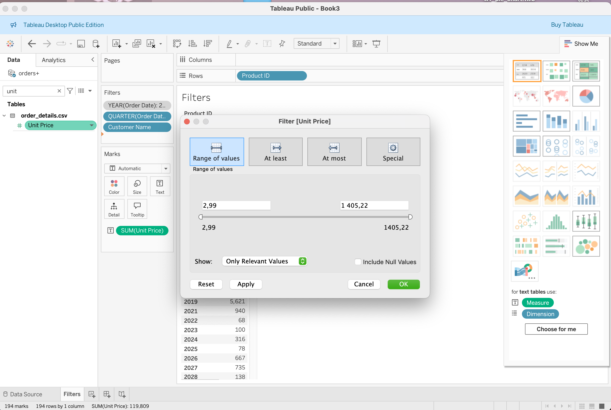
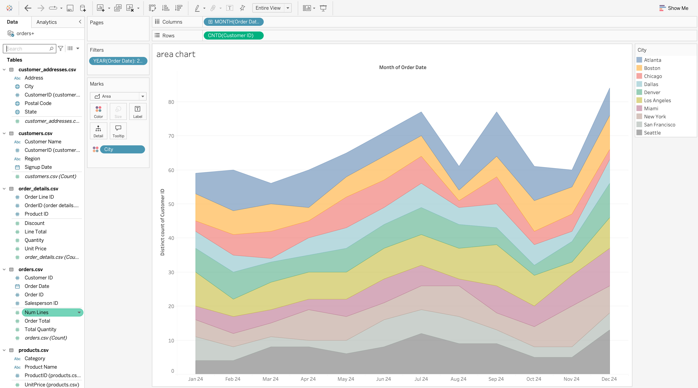
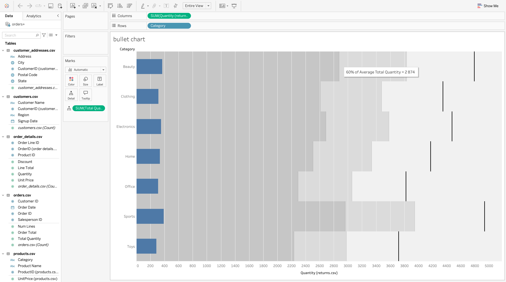
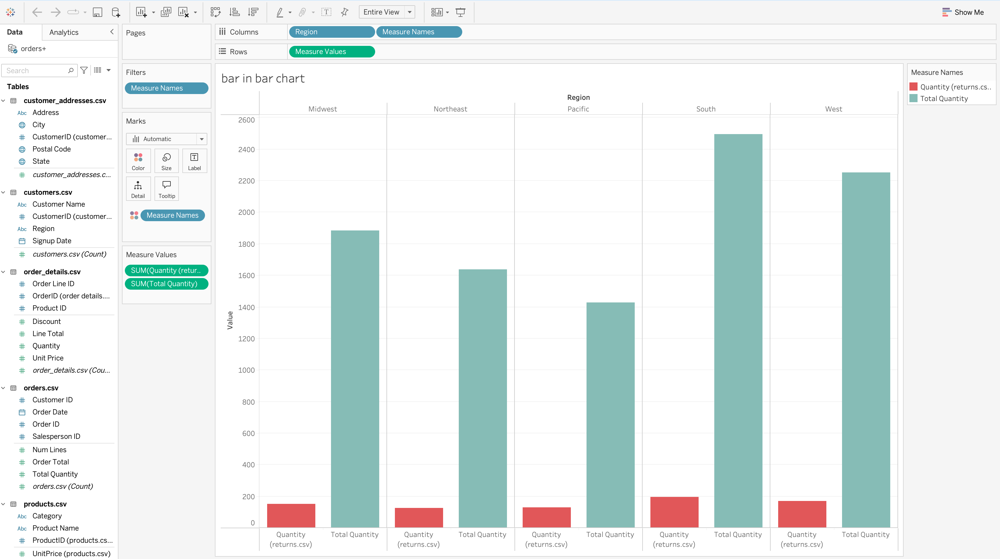
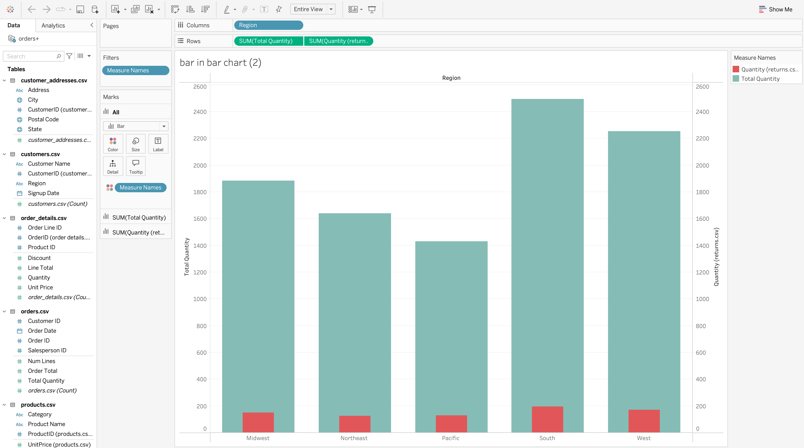
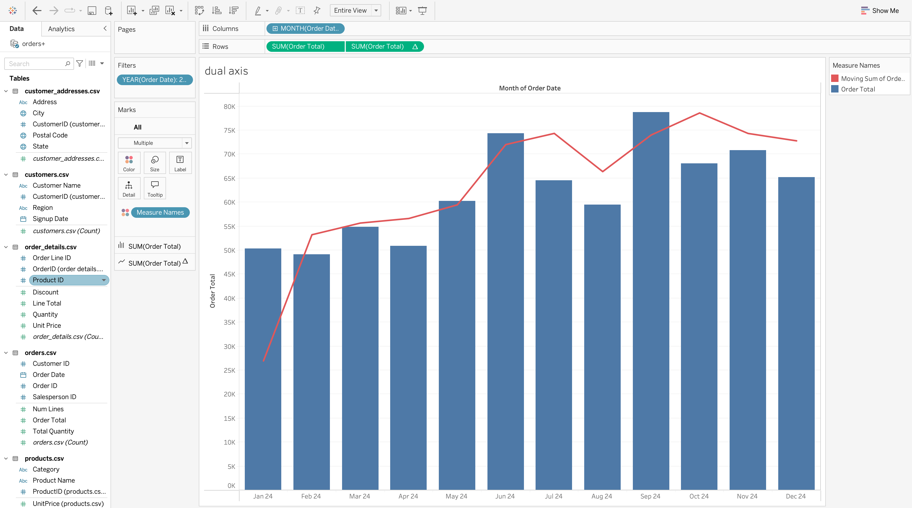

Tableau Session 02: Intermediate Visual Analytics
Learning Goals
By the end of this session, students will be able to:
- Connect Tableau to relational databases (PostgreSQL)
- Combine data using relationships, joins, unions, and blending
- Understand Tableau’s logical and physical data model
- Create calculated fields (row-level vs aggregate)
- Use parameters for interactive analysis
- Apply filters correctly using Tableau’s order of operations
- Build advanced charts (dual-axis, histogram, boxplot, heatmap)
- Design dashboards with interactivity (actions, filters, tooltips)
Overview
This session transitions from basic visual construction to analytical control.
Students learn how Tableau: - Combines data from multiple tables and sources - Calculates values at different levels of detail - Enables interaction through parameters and actions - Supports more sophisticated analytical chart types
By the end of this class, you should be able to model multi-table data correctly, build advanced analytical charts, and create interactive dashboards that respond to user input.
Introduction: From Flat Tables to Analytical Models
In real-world analytics:
- Data rarely exists in a single flat table
- Business questions span multiple entities (customers, orders, products, time)
- Poor data modeling leads to incorrect numbers, not just slow dashboards
Tableau provides several ways to combine data.
Understanding when and why to use each method is essential for trustworthy analysis.
Connecting to Databases (PostgreSQL)
Beyond Excel and CSV files, Tableau connects directly to relational databases.
Use extracts for learning and prototyping.
Use live connections when data freshness is critical.
Tableau Data Model

Tableau separates data modeling into two layers, allowing flexibility without sacrificing correctness.
Logical Layer (Relationships)
- Default view in the Data Source page
- Tables remain separate
- Combined dynamically per visualization
- Aggregation-aware
- Prevents row duplication
Physical Layer (Joins & Unions)
- Accessed by double-clicking a logical table
- Tables are merged into a single structure
- Fixed behavior
- Higher risk of duplicated rows
Relationships vs Joins vs Unions vs Blending
Relationships (Recommended)
Relationships connect tables logically, not physically.
Key characteristics: - Tables stay independent - Tableau decides how to query based on the view - Safe for one-to-many and many-to-many relationships - Best for fact + dimension models

Joins
Joins combine tables horizontally using keys.
Join types: - Inner Join returns only records that have matching keys in both tables, excluding any rows that do not exist on both sides. - Left Join keeps all records from the left table and adds matching data from the right table, inserting NULL values when no match exists. - Right Join keeps all records from the right table and adds matching data from the left table, inserting NULL values when no match exists. - Full Outer Join keeps all records from both tables, returning matched rows where possible and NULL values where matches are missing.
Important considerations: - Joins can duplicate rows - Aggregations may inflate if not handled carefully

Unions
Unions combine tables vertically by stacking rows.
Use cases: - Monthly or yearly files - Identical column structure
Rules: - Matching column names and types - Missing columns result in NULLs - Increases rows, not columns

Blending
Blending combines multiple data sources at the visualization level.
Characteristics: - One primary data source - Secondary sources aggregated independently - Joined via common dimensions - Occurs after aggregation

Differences in Action
 |
 | |
|---|---|---|
| Relationship | Join | Blend |
Note: When using joins, the same row may appear multiple times.
This can inflate aggregated values such as SUM([Order Total]).
Final Data Model for further analysis
 |
|Comparison Summary
| Method | Layer | Adds Rows | Adds Columns | Multiple Sources |
|---|---|---|---|---|
| Relationship | Logical | No | No | No |
| Join | Physical | No | Yes | No |
| Union | Physical | Yes | No | No |
| Blend | Viz-level | No | No | Yes |
Types of Filters
Tableau applies filters in a specific order of operations, which affects both performance and results.
The order is as follows: 1. Extract Filters
2. Data Source Filters
3. Context Filters
4. Dimension Filters
5. Measure Filters
Extract Filters
Extract filters limit data before it is loaded into Tableau.
- Reduce data volume early
- Improve performance
- Apply only to extract-based data sources
Example: - Filter Year = 2023 so only 2023 records are loaded
Data Source Filters
Data source filters restrict data for all users of a data source.
- Applied at the data connection level
- Persist when the data source is published
Example: - [Region] = "West" ensures all users only see West region data

Context Filters
Context filters define the primary filtering context.
- Applied before other dimension and measure filters
- Improve performance in complex dashboards
Example: - Set [Year] = 2023 as a context filter - Then filter [Quarter]
 |
 |
|---|---|
| Year | Quarter |
Dimension Filters
Dimension filters limit categorical fields, such as: - Region - Product Category - Customer Name
Example: - Filter by [Customer Name]
Measure Filters
Measure filters limit aggregated numerical values.
- Order Total
- Quantity
- Unit Price
- Discount
Example: - Filter [Unit Price] >= 100 to focus on high-value purchases

Date Filters
Date filters limit data based on time.
Examples: - Show orders from the last quarter - View orders between Jan 1 and Mar 31, 2023 - Compare Q1 vs Q2 2023 using dashboard filter actions
Top N Filters
Top N filters display only the highest or lowest performers.
Examples: - Top 10 Customers by SUM(OrderTotal) - Bottom 5 Products by Quantity Sold
How to: - Right-click [CustomerName] - Filter → Top → By field → SUM(OrderTotal) → Top 10
Interactive (Quick) Filters
Interactive filters allow dashboard users to control the analysis.
Example: - Right-click [Region] → Show Filter - Choose Dropdown or Single Value List - Users dynamically update views by selecting regions such as “West” or “South”
Tableau Advanced Chart Types
The following advanced chart types allow you to represent multiple datasets using categorical dimensions and numerical measures:
- Area Chart
- Stacked Bar Chart
- Bullet Chart
- Spark Lines
- Bar-In-Bar Chart
- Box Plot
- Pareto Chart
Tableau Area Chart
Purpose
An Area Chart shows the relationship between variables by visualizing cumulative values over time. It highlights both overall trends and category contributions.
Steps to Create an Area Chart
- Drag Order Date to the Columns shelf and set it to Month.
- Drag Customer ID to the Rows shelf, right click and choose Measure to Count(Distinct).
- Change the Marks type to Area.
- Drag City to the Color shelf.

Tableau Stacked Bar Chart
Purpose
A Stacked Bar Chart divides each bar into segments to show category composition while preserving total values.
Steps to Create
- Drag Order Date to the Columns shelf and set it to Year.
- Drag Measure Names to Color.
- Filter Measure Names to keep only Order Total and Refund Amount.
- Drag Measure Values to Rows.
- Change Marks type to Bar.
Enhancement
- Move Measure Names from Detail to Color.
- Drag Measure Values to Label (hold Ctrl).
- Adjust colors and bar size.

Tableau Bullet Chart
Purpose
A Bullet Chart is used to compare an actual value against one or more benchmarks (such as averages, targets, or thresholds) while conserving space.
In this view, the bullet chart compares Category-level Total Quantity against a reference benchmark derived from the overall average quantity.
Business Context
In this example:
- Blue bars represent the actual total quantity per Category
- Background bands represent performance ranges based on the overall average
- Vertical reference lines indicate benchmark values (e.g. average or percentage of average)
This allows quick identification of: - Categories performing below average - Categories performing near or above benchmark - Relative performance without comparing categories directly
Measures Used
Actual value:
SUM([Total Quantity])Benchmark / Reference:
Average of total quantity across all categories
(e.g. 60% of Average Total Quantity = 2,874, as shown in the tooltip)
Steps to Create This Bullet Chart
- Drag Category to the Rows shelf.
- Drag SUM([Total Quantity]) to the Columns shelf.
- Open Show Me and select Bullet Graph.
- Tableau automatically:
- Creates the bullet bar
- Adds a reference line based on aggregation
Customization
- Right-click the axis → Add Reference Line
- Set the reference line to:
- Scope: Entire Table
- Value: Average of
SUM([Total Quantity])
- Scope: Entire Table
- Add additional reference lines or bands using:
- Percent of average (e.g. 60%, 80%, 100%)
- Adjust:
- Bar color (actual values)
- Band opacity (performance ranges)
- Tooltip text for clarity

Tableau Bar-In-Bar Chart
Purpose
A Bar-in-Bar Chart is used to compare two related measures for the same dimension by displaying one bar inside another.
It emphasizes context and relationship rather than ranking.
Typical use cases include: - Returned vs Total Quantity - Actual vs Target - Defective vs Produced Units
Business Context
In this analysis:
- Outer bars (teal) represent Total Quantity by Region
- Inner bars (red) represent Returned Quantity by Region
- Both measures are evaluated within the same category
This allows analysts to quickly identify: - Regions with high return volume - Regions where returns are disproportionately high relative to volume - Differences between absolute volume and problem intensity
Measures and Dimension Used
Dimension:
RegionMeasures:
SUM([Total Quantity])
SUM([Quantity (returns.csv)])
Two Ways to Build a Bar-In-Bar Chart in Tableau
Tableau does not have a native Bar-in-Bar chart type, so there are two common construction methods.
Both are valid — the choice depends on data scale and analytical intent.
Method 2: Dual Measure Axes (Separate Axes)
How it works: - Each measure has its own axis - Bars are aligned by category but scaled independently
Characteristics: - Preserves readability when values differ greatly - Avoids compressing small measures - Focuses on trend comparison, not proportion
Use this when: - Measures differ significantly in size - Accuracy and visibility are more important than proportionality - You want to compare patterns across categories
Limitation: - Part-to-whole relationships are less visually precise - Requires clear labeling to avoid confusion
How to Read a Bar-In-Bar Chart
- The outer bar provides overall context
- The inner bar shows a related or dependent metric
- Large inner bars relative to the outer bar signal potential issues
- Categories should be evaluated independently, not ranked


Tableau Box and Whisker Plot (Whisker Plot)
Purpose
A Box-and-Whisker Plot is used to analyze the distribution of a measure, showing how values are spread, where the typical value lies, and whether outliers exist.
Unlike bar charts, box plots focus on variability and distribution, not totals.
Business Context
In this example, the chart shows the distribution of Discounts across different Regions.
For each Region, the box plot reveals: - Typical discount levels - How widely discounts vary - Whether extreme or unusual discounts occur
This helps answer questions such as: - Which regions apply more aggressive discounting? - Where is discount behavior inconsistent or risky? - Are there outliers that require investigation?
Fields Used
Dimension:
RegionMeasure:
SUM([Discount])Additional Detail:
Individual records shown as points to highlight outliers
How This Chart Is Built
- Drag Region to the Rows shelf.
- Drag SUM([Discount]) to the Columns shelf.
- Open Show Me and select Box-and-Whisker Plot.
- (Optional) Drag a dimension (e.g. Category or Order ID) to Detail to display individual data points.
How to Read a Box-and-Whisker Plot
For each Region:
Median (line inside the box):
The typical discount valueBox (Interquartile Range):
Middle 50% of discount values (from Q1 to Q3)Whiskers:
The range of discounts excluding extreme outliersDots outside whiskers:
Outliers — unusually high or low discounts
Wider boxes indicate greater variability in discounting behavior.
Insights from This View
- Regions with wide boxes apply discounts inconsistently
- Regions with long whiskers have a broad discount range
- Isolated points far from the box indicate exceptional discounts that may require review
- Similar medians but different spreads suggest different pricing strategies

Tableau Dual-Axis Chart
Purpose
A Dual-Axis Chart is used to display two related measures on the same view while allowing each measure to retain its own visual encoding.
It is especially effective for combining absolute values with trend-based or calculated metrics.
Business Context
In this example, the chart analyzes monthly sales performance:
- Blue bars represent the monthly Order Total
- Red line represents a trend-based calculation (e.g. moving sum or running total of Order Total)
- Both measures are aligned by Month of Order Date
This combination allows analysts to: - See month-by-month performance - Understand the overall sales trend - Detect momentum, slowdowns, or seasonal patterns
Fields Used
Dimension:
MONTH([Order Date])Measures:
SUM([Order Total])→ displayed as barsSUM([Order Total])with a table calculation → displayed as a line
How This Chart Is Built
- Drag MONTH([Order Date]) to the Columns shelf.
- Drag SUM([Order Total]) to the Rows shelf (this creates the bar chart).
- Drag SUM([Order Total]) to the Rows shelf a second time.
- On the second measure:
- Change Marks type to Line
- Apply a table calculation (e.g. Moving Sum or Running Total)
- Right-click the second axis and select Dual Axis.
- Synchronize axes if necessary and adjust colors.
How to Read This Dual-Axis Chart
- Bars show the exact sales value for each month
- Line shows the direction and strength of the trend
- Divergence between bars and line indicates:
- Acceleration or deceleration in performance
- Temporary spikes or drops
- Peaks and valleys help identify seasonality
Why Use a Dual-Axis Here
Using a single chart allows: - Trend and volume to be analyzed together - Faster insight compared to separate charts - Better storytelling for time-based performance
